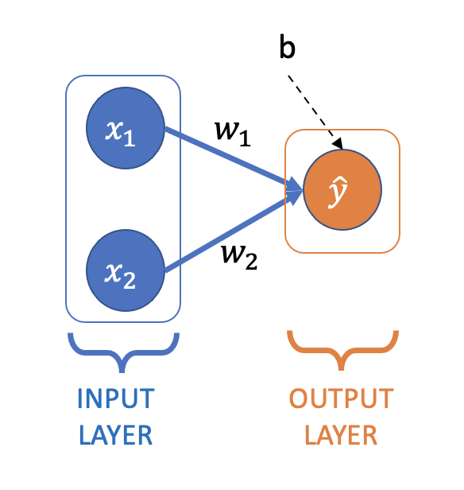
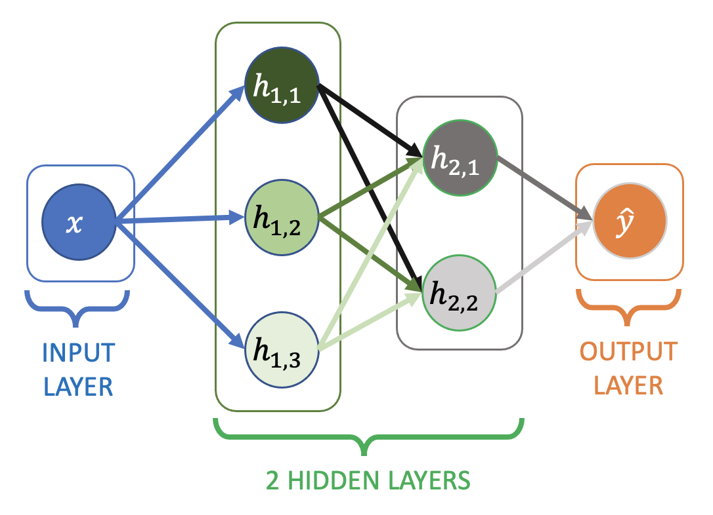
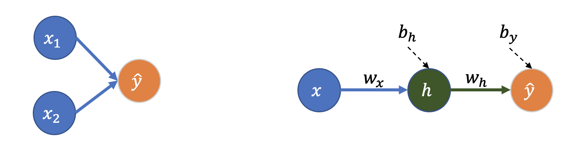

01: Linear Regression#
In this notebook we’ll cover:
Linear regression
Loss functions
Gradient descent
Linear regression as a neural network
Pytorch
Start to consider how neural networks fit non-linear functions
import itertools
import numpy as np
import pandas as pd
import matplotlib.pyplot as plt
import seaborn as sns
import torch
from torch import nn
Dataset#
I have painstakingly collected 100 days of data on the average happiness (out of 10) of Turing staff in the office based on the number of oranges üçä and cups of coffee ‚òïÔ∏è available at the start of the day:
df = pd.read_csv("../data/01_happiness.csv")
df
| oranges | coffee | happy | |
|---|---|---|---|
| 0 | 10 | 528 | 5.832712 |
| 1 | 12 | 509 | 4.648788 |
| 2 | 15 | 628 | 4.286937 |
| 3 | 14 | 389 | 5.863064 |
| 4 | 13 | 216 | 3.109686 |
| ... | ... | ... | ... |
| 95 | 11 | 293 | 2.525590 |
| 96 | 15 | 750 | 6.802309 |
| 97 | 17 | 701 | 6.446739 |
| 98 | 11 | 832 | 7.072423 |
| 99 | 19 | 355 | 4.444550 |
100 rows × 3 columns
fig, ax = plt.subplots(1, 2, figsize=(7, 3), sharey=True)
ax[0].scatter(df["oranges"], df["happy"])
ax[0].set_ylabel("Mean Happiness")
ax[0].set_xlabel("Number of Oranges")
ax[1].scatter(df["coffee"], df["happy"])
ax[1].set_xlabel("Cups of Coffee")
Text(0.5, 0, 'Cups of Coffee')
Linear Regression#
I want to use the data ~~so I can have more oranges to eat~~ so the Turing can arrange its deliveries to maximise happiness by fitting this model:
where:
\(\hat{y}\) : Predicted Turing happiness
\(x_1\) : Number of oranges available üçä
\(w_1\) : Happiness increase per orange
\(x_2\) : Cups of coffee available ☕️
\(w_2\) : Happiness increase per cup of coffee
\(b\) : Intercept or ‚Äúbias‚Äù (happiness if no oranges or coffee üò±)
Learn “best” values of \(w_1\), \(w_2\), and \(b\)
How?
From Maximum Likelihood to Loss Functions#
*Note: This section assumes some knowledge of probability and Bayesian statistics. It’s not necessary to understand the rest of the notebook, but you might find this longer description helpful if you’d like to learn more.
In Bayesian linear regression we |model the true value (actual happiness), \(y\), as being drawn from a normal distribution with mean equal to the predicted value (predicted happiness), \(\hat{y_i}\), that we’re trying to derive (for a single data point \(i\)):
where \(\sigma\), is the standard deviation of the distribution.
In other words, we have a model of the world where happiness is a function of the number of oranges and cups of coffee available only, with a normally distributed error.
The probability density of the normal distribution is given by:
When fitting linear regression in a Bayesian way we choose the parameters to maximise the likelihood of the data, given by:
Often it’s easier (and more numerically stable) to compute the log likelihood instead:
The expression above follows from log rules, \(\log (ab) = \log a + \log b\), and from \(\log(\exp(a)) = a\). Note that maximising the log likelihood is the same as maximising the likelihood, as \(\log a > \log b\) for all \(a > b\).
We can remove the terms that don’t depend on the parameters of the model, choose to do minimisation rather than maximisation (i.e. multiply by -1), and take the mean likelihood across the dataset, to give the familiar mean squared error loss function:
The main difference to Bayesian linear regression in what follows is that:
We don’t use a prior (or, equivalently, we use a non-informative prior so the parameters depend only on the data)
We only compute the ‘maximum likelihood’ values for the parameter, not a full posterior.
Loss Function#
We choose \(w_1\), \(w_2\), \(b\) to minimise the mean squared error between the predicted and actual value:
This is the mean squared error (MSE) loss function.
Here’s an example for one choice of \(w_1\), \(w_2\) and \(b\). The loss is the sum of the lengths of the vertical black lines (squared) - the difference between the predicted and actual value:
def predict(X, w_1, w_2, b):
return w_1 * X["oranges"] + w_2 * X["coffee"] + b
def loss(y_hat, y):
return ((y_hat - y) ** 2).sum() / len(y)
def plot_predictions(w_1, w_2, b, ax=None):
y_hat = predict(df[["oranges", "coffee"]], w_1, w_2, b)
if ax is None:
fig, ax = plt.subplots(1, 1, figsize=(5, 3))
ax.plot(y_hat, df["happy"], "o")
ax.plot([y_hat.min(), y_hat.max()], [y_hat.min(), y_hat.max()], "r--")
ax.set_xlabel(r"$\hat{y}$ (predicted happiness)")
ax.set_ylabel(r"$y$ (actual happiness)")
ax.set_title(
f"$w_1$ = {str(w_1)}, $w_2$ = {str(w_2)}, $b$ = {str(b)}\n"
f"loss = {loss(y_hat, df['happy']):.3f}"
)
for _, row in df.iterrows():
ax.plot([y_hat, y_hat], [y_hat, df["happy"]], color="k", linewidth=0.5, zorder=0)
plot_predictions(0.1, 0.01, -0.5)
We can compute the loss for many different values of \(w_1\), \(w_2\), and \(b\) (here varying only one or two of the parameters due to be able to plot nicely):
def plot_loss_grid_2d(ax, title=""):
samples = 20
W_1 = np.linspace(-0.025, 0.25, samples)
W_2 = np.linspace(-0.005, 0.02, samples)
b = 0.885135748052889
w1_plot = []
w2_plot = []
losses = []
for w_1, w_2 in itertools.product(W_1, W_2):
w1_plot.append(w_1)
w2_plot.append(w_2)
losses.append(loss(predict(df, w_1, w_2, b), df["happy"]))
sns.heatmap(
np.array(losses).reshape(samples, samples),
xticklabels=W_1.round(2),
yticklabels=W_2.round(2),
cbar_kws={"label": "Loss"},
ax=ax,
)
ax.set_xlabel("$w_1$")
ax.set_ylabel("$w_2$")
ax.set_title(title)
def plot_loss_grid_1d(ax, title=""):
samples = 50
W_1 = np.linspace(0, 0.24, samples)
w_2 = 0.0059909
b = 0.885135748052889
w1_plot = []
losses = []
for w_1 in W_1:
w1_plot.append(w_1)
losses.append(loss(predict(df, w_1, w_2, b), df["happy"]))
ax.plot(w1_plot, losses)
ax.set_xlabel("$w_1$")
ax.set_ylabel("loss")
ax.set_title(title)
fig, ax = plt.subplots(1, 2, figsize=(10, 4))
plot_loss_grid_1d(ax[0], title="Loss when varying $w_1$ only")
plot_loss_grid_2d(ax[1], title="Loss when varying $w_1$ and $w_2$")
fig.tight_layout()
The best choice of \(w_1\), \(w_2\), and \(b\) is the one that minimises the loss (the bottom of the valleys above) - how to find where that is?
Gradient Descent#
The loss function again (expanded to include the definition of \(\hat{y}\)):
The minimum loss will be found where the partial derivatives of the loss function with respect to the parameters is zero:
(sometimes you will see \(\mathcal{L}/2\) used as a loss function instead, to avoid the factors 2 above)
The process by which we find the parameter values that zero the gradients above is called gradient descent.
I’ve replaced \(N\), the number of samples in the dataset, with \(m \leq N\), to indicate that we could choose to update the parameters based on the loss of a subset of the data.
\(m\) is known as the batch size
Different values of \(m\) correspond to different forms of gradient descent:
\(m = N\) : Batch Gradient Descent (or, more commonly, Gradient Descent)
\(1 < m < N\) : Mini Batch Gradient Descent (also known as Mini Batch Stochastic Gradient Descent or, more commonly, just Stochastic Gradient Descent)
\(m = 1\): Stochastic Gradient Descent
The random (stochastic) nature of mini batch and stochastic gradient descent come from needing to select a sample of the dataset for each parameter update.
Broadly:
Batch gradient descent: Slower, better convergence
(Mini batch) stochastic gradient descent: Faster, worse convergence
We can pick some initial values for \(w_1\), \(w_2\), and \(b\), and then iteratively update them towards the values that will zero the partial derivatives of the loss:
where \(\alpha\) is the “learning rate” (or the relative size of the parameter updates we’re going to make after each iteration)
The learning rate is a hyperparameter:
\(\alpha\) too large - gradient descent may not converge
\(\alpha\) too small - gradient descent will take too long to converge
Gradient descent will converge faster if all the features are on the same scale, so we can standardise them (to have mean zero and standard deviation of one):
for column in df.columns:
df[column] = (df[column] - df[column].mean()) / df[column].std()
df.describe()
| oranges | coffee | happy | |
|---|---|---|---|
| count | 1.000000e+02 | 1.000000e+02 | 1.000000e+02 |
| mean | -6.661338e-17 | 6.217249e-17 | -5.817569e-16 |
| std | 1.000000e+00 | 1.000000e+00 | 1.000000e+00 |
| min | -3.094917e+00 | -2.163980e+00 | -2.121838e+00 |
| 25% | -6.171814e-01 | -6.119499e-01 | -6.178392e-01 |
| 50% | 5.856466e-02 | -1.085261e-01 | 8.677973e-02 |
| 75% | 7.343107e-01 | 6.999679e-01 | 6.344933e-01 |
| max | 2.311051e+00 | 2.550109e+00 | 2.220604e+00 |
Here’s a basic implementation of batch gradient descent:
def gradient_descent(df, learning_rate=0.001, epochs=1000):
w_1 = 0
w_2 = 0
b = 0
X = df[["oranges", "coffee"]]
y = df["happy"]
losses = []
for e in range(epochs):
l = loss(predict(X, w_1, w_2, b), y)
losses.append(l)
y_hat = predict(X, w_1, w_2, b)
delta = y_hat - y
w_1 = w_1 - (learning_rate * 2 / len(y)) * (delta * X["oranges"]).sum()
w_2 = w_2 - (learning_rate * 2 / len(y)) * (delta * X["coffee"]).sum()
b = b - (learning_rate * 2 / len(y)) * delta.sum()
return w_1, w_2, b, losses
The number of epochs is how many times we’ll loop through the entire dataset before stopping (updating the parameters after each batch, though in this case we only have one batch per epoch - the entire dataset).
w_1, w_2, b, l = gradient_descent(df, learning_rate=0.001, epochs=5000)
fig, ax = plt.subplots(1, 2, figsize=(8, 4))
ax[0].plot(l)
ax[0].set_xlabel("epochs")
ax[0].set_ylabel("loss")
plot_predictions(round(w_1, 3), round(w_2, 3), round(b, 3), ax[1])
fig.tight_layout()
Neural Network for Linear Regression#
Here is linear regression represented as a small neural network:

You’ll see this type of network (and the networks we’ll use throughout the next few notebooks) referred to as:
Feedforward neural network
Single- or Multi-layer Perceptron (MLP)
Fully-connected neural network
All the layers in this network are “dense” or “fully-connected” layers:
Dense layer: All nodes in the previous layer are connected to all the nodes in the next layer (a node is one of the circles above)
Pytorch#
pytorch and tensorflow are two of the most well-known deep learning libraries.
Here is our linear regression model expressed as a pytorch neural network:
model = nn.Sequential(
nn.Linear(in_features=2, out_features=1),
)
print(model)
Sequential(
(0): Linear(in_features=2, out_features=1, bias=True)
)
nn.Sequential builds a neural network from a sequence of layers - for our model a single “linear layer” with 2 inputs (\(x_1\), \(x_2\)) and 1 output (\(\hat{y}\)).
The layer specification is enough for pytorch to know the parameters we have to learn, and these are given random initial values (see here):
for name, param in model.named_parameters():
print(f"Layer: {name} | Size: {param.size()} | Values : {param[:]} \n")
Layer: 0.weight | Size: torch.Size([1, 2]) | Values : tensor([[0.5459, 0.6091]], grad_fn=<SliceBackward0>)
Layer: 0.bias | Size: torch.Size([1]) | Values : tensor([0.0544], grad_fn=<SliceBackward0>)
As before we have 2 weights (\(w_1\) and \(w_2\), but now both in 0.weight), and an intercept or bias term (\(b\) before, and now in 0.bias).
pytorch works with its own “tensor” data structure (like a numpy array optimised for working with GPUs and automatic differentiation), so we need to convert our data:
X = torch.tensor(df[["oranges", "coffee"]].values, dtype=torch.float)
y = torch.tensor(df["happy"].values, dtype=torch.float)
y = y[:, None] # output needs to be 2D, [:, None] adds a second (length 1) axis
To get predictions from the model (using the randomly initialised weights at this stage), just pass it the data:
model(X[:10])
tensor([[-0.5776],
[-0.3854],
[ 0.3198],
[-0.4786],
[-1.0905],
[-1.2150],
[ 0.4965],
[ 0.4527],
[ 0.8683],
[-0.3896]], grad_fn=<AddmmBackward0>)
This is called a forward pass through the network (start with data at the input layer and pass it forward through the network to get predictions at the output layer).
Time to optimise the parameters (train the network). We can use pytorch’s built-in mean-squared-error (MSE) loss function class:
loss_fn = nn.MSELoss()
And its own implementation of stochastic gradient descent (SGD):
learning_rate = 0.001
optimizer = torch.optim.SGD(model.parameters(), lr=learning_rate)
Then define a function to train the network:
(NB: usually this would include a 2nd inner loop over batches, but here we’re updating the parameters on the entire dataset at each iteration)
def train(X, y, model, loss_fn, optimizer, epochs):
loss_history = []
for e in range(epochs):
# Compute prediction and loss
pred = model(X)
loss_value = loss_fn(pred, y)
loss_history.append(float(loss_value))
# Backpropagation
optimizer.zero_grad() # without this the optimiser would accumulate the gradients between epochs
loss_value.backward()
optimizer.step()
print("Done!")
return model, loss_history
In each epoch there are two main steps:
Forward pass: Predict and compute the loss with the current parameter values
Back propagation: Use the loss and the gradients (partial derivatives) to update the parameter values
Let’s go!
model, loss_history = train(X, y, model, loss_fn, optimizer, 15000)
Done!
We get a similar fit (and loss) to our “more conventional” linear regression implementation from before:
params = []
for name, param in model.named_parameters():
print(f"Layer: {name} | Size: {param.size()} | Values : {param[:]} \n")
params.append(param.detach().numpy())
w_1 = params[0][0][0]
w_2 = params[0][0][1]
b = params[1][0]
fig, ax = plt.subplots(1, 2, figsize=(8, 4))
ax[0].plot(loss_history)
ax[0].set_xlabel("epochs")
ax[0].set_ylabel("loss")
plot_predictions(round(w_1, 3), round(w_2, 3), round(b, 3), ax[1])
fig.tight_layout()
Layer: 0.weight | Size: torch.Size([1, 2]) | Values : tensor([[0.2929, 0.7051]], grad_fn=<SliceBackward0>)
Layer: 0.bias | Size: torch.Size([1]) | Values : tensor([-8.3983e-09], grad_fn=<SliceBackward0>)

Adding nodes and layers#
Here’s a slightly bigger network (but with only one input feature, \(x\)):

Additional layers between the input and output layer are known as hidden layers
Each edge (arrow) in the diagram has an associated weight
All of the nodes have an implicit bias / intercept term as before, they’re just not shown.
All the layers are still dense layers (each node connected to all the nodes in the next layer)
Example output from a node in the first hidden layer:
Example output from a node in the second hidden layer:
Final output:
The weights and biases aren’t labeled on the diagram, but the notation \(w_{(1,3)\rightarrow(2,1)}\) means the arrow from node 3 in the first hidden layer, to node 1 in the second hidden layer.
Here’s the network implemented in pytorch:
model = nn.Sequential(
nn.Linear(in_features=1, out_features=3),
nn.Linear(in_features=3, out_features=2),
nn.Linear(in_features=2, out_features=1),
)
print(model)
print("\n------ Parameters ------\n")
for name, param in model.named_parameters():
print(f"Layer: {name} | Size: {param.size()}\n")
Sequential(
(0): Linear(in_features=1, out_features=3, bias=True)
(1): Linear(in_features=3, out_features=2, bias=True)
(2): Linear(in_features=2, out_features=1, bias=True)
)
------ Parameters ------
Layer: 0.weight | Size: torch.Size([3, 1])
Layer: 0.bias | Size: torch.Size([3])
Layer: 1.weight | Size: torch.Size([2, 3])
Layer: 1.bias | Size: torch.Size([2])
Layer: 2.weight | Size: torch.Size([1, 2])
Layer: 2.bias | Size: torch.Size([1])
Note the the number of weights in each layer matches the number of arrows in the diagram (3 to the first hidden layer, 6 to the second hidden layer, and 2 to the output layer). Plus there’s one bias (intercept) term per node in the network.
What types of functions can this network learn?#
a) Linear (with terms up to \(x\))
b) Quadratic (with terms up to \(x^2\))
c) Cubic (with terms up to \(x^3\))
d) Higher order
Remember that:
Our first example with only an input and output layer could fit a linear function.
This new network has two additional (hidden) layers
Can the network learn \(y = x^2\) ?#
X = np.linspace(-1, 1, 1000)
y = X**2
X = torch.tensor(X, dtype=torch.float)[:, None]
y = torch.tensor(y, dtype=torch.float)
y = y[:, None]
optimizer = torch.optim.SGD(model.parameters(), lr=0.001)
model, loss_history = train(X, y, model, loss_fn, optimizer, 10000)
Done!
fig, ax = plt.subplots(1, 2, figsize=(7, 3))
ax[0].plot(loss_history)
ax[0].set_xlabel("epochs")
ax[0].set_ylabel("loss")
ax[1].plot(X.numpy(), y.numpy(), "b", label="y = $x^2$")
ax[1].plot(X.numpy(), model(X).detach().numpy(), "k--", label="fit")
ax[1].set_xlabel("x")
ax[1].set_ylabel("y")
ax[1].legend()
fig.tight_layout()

No! The new neural network is still a linear regression model that could be reduced to \(\hat{y} = wx + b\).
Why?#
The neural network can be broken down in to two main mini-structures (that can appear anywhere in the network, not necessarily in the input and output layers as shown below):

Left: The linear regression model we fit in the first example earlier.
Right: Wasn’t intuitive to me that this is still 1st-order linear regression (I would have guessed the extra layer creates an \(x^2\) term). So I had to write it out:
The weights get multiplied, but not the input features.
What’s missing?#
We need the output from each node to be a non-linear function of its inputs.
Activation functions - Part 2.